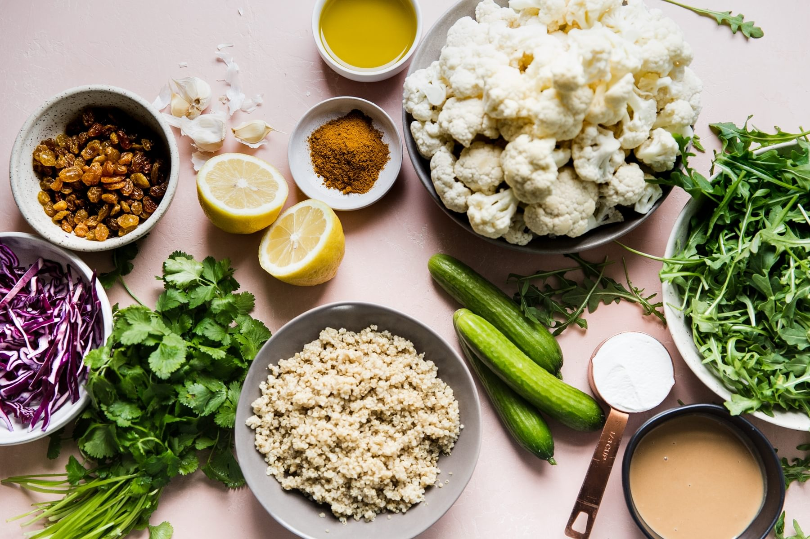

Curried Cauliflower Quinoa Salad

Description
This curried cauliflower quinoa salad with tahini dressing is so simple. It's the perfect vegetarian weeknight dinner! Hello meatless-Mondays.
Ingredients
Main Ingredients
- 1 small head cauliflower
- 2 tbsp curry powder
- 1/3 cup olive oil
- 2 tsp salt
- 1/4 cup packed fresh cilantro leaves
- 2 cup cooked quinoa
- 2 cup red cabbage, shredded
- 4 cup loosely packed arugula
- 2 Persian cucumbers, thinly sliced
- 1 cup golden raisins
Yogurt Tahini Salad Dressing
- 1/2 cup Plain Greek yogurt
- 1 cup English or Persian Cucumber
- 2 tbsp olive oil
- 1/3 cup tahini
- 1/3 cup lemon juice
- 1 garlic clove, minced
- 1/2 tsp salt
How To Make a Burrito Bowl
Back to Main Page